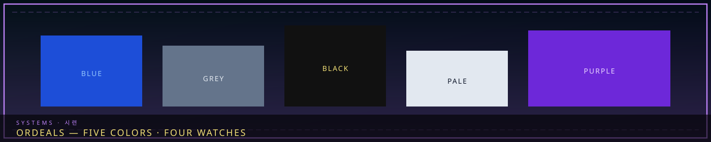

/// RAPID JUMP:
STATUS: ARCHIVE VERIFIED |
CLEARANCE: LEVEL-4 OVERSIGHT |
PROTOCOL: REVERIE DIRECTORATE
ARTICLE
DISCUSSION
SOURCE
HISTORY
YEAR 4,238 · DAWN OF HOPE
SYSTEMS & MECHANICS RECORD
Ordeals Framework & Incursion Waves
Contents
- System Framework & File Template
- I. What Ordeals Are
- II. The Five Colors
- III. The Four Times
- IV. The Ordeal File Template
- Ordeal Classification
- Formation
- Appearance
- Behavior
- Suppression Protocol
- Facility Impact
- R.D. Response Protocol
- Trivia
- V. R.D. Integration — How Ordeals Fit the Hand of Change
- VI. Sample Ordeals — First Watch Tier (One Per Color)
- VII. Ordeal Canon Notes
- VIII. File Location & Naming
“We contain the sorrow. But the sorrow also spawns.”

 Han thickensWaves follow density
Han thickensWaves follow densityOverview
# SOMNARAK — The Breach: Ordeals
System Framework & File Template
"We contain the sorrow. But the sorrow also spawns. When the Han grows thick enough in the Hand of Change, it does not wait for the Weeping to crystallize it — it forms on its own, hostile, mortal, and everywhere at once. We call these Ordeals. They are not entities. They are the facility fighting back." — Containment Lead Dekan (데칸), R.D. Ordeal Response Manual
I. What Ordeals Are
Ordeals (시련 — siryeon, "trials") are spontaneous, hostile manifestations of concentrated Han that form within the Hand of Change during periods of high sorrow activity. They are not Sorrow Entities — they do not crystallize from the Weeping, they carry no SECC designation, they are not immortal, and they cannot be contained. They appear, they wander, they attack, and they must be suppressed (destroyed) before they destabilize the facility.
Key Differences from Sorrow Entities
| Property | Sorrow Entity | Ordeal |
|---|---|---|
| Origin | Crystallized from the Weeping | Spontaneous Han formation in the facility |
| Immortality | Immortal — returns to the Weeping when destroyed | Mortal — permanently destroyed when suppressed |
| Uniqueness | Unique — one of each | Non-unique — multiple of the same Ordeal can exist simultaneously |
| Containment | Contained in sectors | Uncontained — wander freely through the Hand of Change |
| Classification | SECC code (Origin-Coherence-Potency-Number) | Color + Time (e.g., Blue First Watch) |
| Work Types | Flerehan / Pugnahan / Viderehan / Ferrehan | None — Ordeals cannot be worked; they must be suppressed in combat |
| M.A.W. / M.A.W. | Yields equipment on extraction | No extraction — Ordeals dissolve on suppression, leaving only residual Han |
| Tale / Testimony / Record | Full 이야기 / 증언 / 기록 sections | None — Ordeals have no story; they are phenomena, not persons |
| Sorrow Gauge | Gauge-based breach system | Spawn-based — they appear when facility Han-density crosses thresholds |
II. The Five Colors
Each Ordeal Color represents a type of Han manifestation, paralleling Somnarak's sorrow elements. All Ordeals of the same Color share thematic similarities but differ in each Time (First Watch ≠ Second Watch ≠ Third Watch ≠ Tide Watch).
Color System
| Color | Han Source | Somnarak Element | Theme | Parallels (Somnarak Containment) |
|---|---|---|---|---|
| BLUE | Lament (Deep Blue) | Lament | Weeping, emotional assault, Composure drain, memory flood | Green (amorphous sorrow) |
| BLACK | Weight (Black) | Weight | Crushing force, physical damage, structural destruction | Amber (physical swarm) |
| PALE | Void (Pale White) | Void | Erasure, identity theft, Clarity drain, absence | Indigo (cold, mechanical) |
| GREY | Grudge (desaturated Crimson) | Grudge | Hostility, aggression, violence, Resilience damage | Crimson (humanoid, hostile) |
| PURPLE | Raw Han / corruption | Mixed / the Han itself | Chaos, infection, parasitic transformation, unpredictable | Violet (parasitic, invasive) |
Color Behaviors
BLUE — "The Mourning Host"
Formed from accumulated Lament Han. They weep, wail, and assault the mind. Multiple translucent figures that drain Composure and force personnel to relive grief. They move in groups, moaning, and their attacks are emotional rather than physical — a room of BLUE Ordeals can reduce a team to weeping in seconds. Weak individually; overwhelming in swarms.
BLACK — "The Crushing Tide"
Formed from accumulated Weight Han. They are slow, dense, and physically devastating. Dark, heavy figures that crush, flatten, and press down. Their attacks are purely physical — broken bones, collapsed corridors, pinned personnel. They move slowly but hit with the force of collapsing buildings. Resistant to emotional and identity attacks; vulnerable only to overwhelming physical force or speed.
PALE — "The Fading"
Formed from accumulated Void Han. They erase — identity, memory, presence, existence. Featureless, pale-white figures that drain Clarity and cause personnel to forget who they are, where they are, and why they came. They are silent, cold, and the most psychologically terrifying: a PALE Ordeal does not kill the body; it erases the person inside it, leaving an empty shell that must be carried out.
GREY — "The Resentful March"
Formed from accumulated Grudge Han. They are hostile, aggressive, armed — the raw fury of injustice given form. Humanoid figures carrying weapons of crystallized resentment (blades, hammers, chains). They actively hunt personnel, coordinate in groups, and fight with tactical intelligence. The most combat-intensive Ordeal color; suppression requires trained combat teams with M.A.W. weapons.
PURPLE — "The Corruption"
Formed from raw, unprocessed Han energy — the Weeping's own pressure leaking upward. They are the most chaotic and unpredictable Ordeals. Purple-tinged masses that shift form, spawn smaller manifestations, infect the facility's Han-flow, and attempt to parasitically bond with personnel (causing temporary Fracture-like symptoms). PURPLE Ordeals are the rarest but the most dangerous: they corrupt, transform, and spread. Suppression requires all approaches coordinated — physical force to destroy the form, emotional grounding to resist infection, and observation to track the shifting shape.
III. The Four Times
Each Ordeal appears at a specific Time (severity tier), which determines its power, numbers, and the threat it poses. One Ordeal per Time per day; Times escalate from First Watch to Tide Watch.
| Time | Severity | Somnarak Context | Trigger Condition | Risk Equivalent |
|---|---|---|---|---|
| First Watch | Minor | Early Management Phase, low Han accumulation | After 2–3 work cycles | SOMNA |
| Second Watch | Moderate | Mid-Management Phase, Han building | After 5–6 work cycles | HE |
| Third Watch | Major | Late Management Phase, approaching Sorrow Tide | After 8+ work cycles or near-Tide | PHANTASM |
| Tide Watch | Catastrophic | Sorrow Tide peak; facility-wide crisis | Only during the Sorrow Tide or major breach cascade | APOCRYPHA |
Time Rules
- First Watch Ordeals spawn in moderate numbers (5–10 entities) and are individually weak. Suppressible by a standard team of Level 2+ personnel. They appear as a warning — the Han is accumulating.
- Second Watch Ordeals spawn in larger numbers (10–20) or as fewer, more powerful entities. Require Level 3+ personnel with M.A.W. equipment.
- Third Watch Ordeals are powerful and numerous. May include a single large entity or a coordinated horde. Require Level 4+ personnel, specialized M.A.W., and Containment Lead oversight.
- Tide Watch Ordeals are facility-wide crises. A single massive entity or a swarm that spans multiple floors. Only the Echo-Cores and their top teams engage Tide Watch Ordeals. A Tide Watch Ordeal that is not suppressed before dawn can cause permanent structural damage to the Hand of Change.
Color × Time Matrix (20 Ordeal Types)
Each Color × Time combination is a unique Ordeal with its own name, appearance, and behavior:
| First Watch | Second Watch | Third Watch | Tide Watch | |
|---|---|---|---|---|
| BLUE | Blue First Watch | Blue Second Watch | Blue Third Watch | Blue Tide Watch |
| BLACK | Black First Watch | Black Second Watch | Black Third Watch | Black Tide Watch |
| PALE | Pale First Watch | Pale Second Watch | Pale Third Watch | Pale Tide Watch |
| GREY | Grey First Watch | Grey Second Watch | Grey Third Watch | Grey Tide Watch |
| PURPLE | Purple First Watch | Purple Second Watch | Purple Third Watch | Purple Tide Watch |
Child articles (one per color, LC Amber/Crimson pattern — not 60 watch stubs): Blue · Black · Pale · Grey · Purple. Time axis: The Four Watches.
IV. The Ordeal File Template
Each individual Ordeal file follows this structure — simpler than the Sorrow Entity template, focused on formation, behavior, and suppression:
`markdown
# [COLOR] [TIME] — [Name]
"[Thematic opening quote.]"
Ordeal Classification
| Field | Value |
|---|---|
| Color | [BLUE / BLACK / PALE / GREY / PURPLE] |
| Time | [First Watch / Second Watch / Third Watch / Tide Watch] |
| Threat Level | [Minor / Moderate / Major / Catastrophic] (≈ SOMNA / MORPHEAN / PHANTASM / APOCRYPHA) |
| Han Source | [Lament / Weight / Void / Grudge / Raw Han] |
| Spawn Count | [Number of entities that appear] |
| Mortality | Mortal — permanently suppressible |
| Facility Zone | [Which floors/zones of the Hand of Change are affected] |
| First Recorded | [Year] |
Formation
[How and why this Ordeal forms during high-sorrow periods. What conditions trigger it.]
Appearance
[Physical description — size, shape, material, behavior. What personnel see when it spawns.]
Behavior
[Movement patterns, attack types, special abilities, coordination with other Ordeal entities.]
| Phase | Action | Effect | Trigger |
|---|---|---|---|
| [Phase 1] | [Action] | [Effect] | [Trigger] |
| [Phase 2] | [Action] | [Effect] | [Trigger] |
Suppression Protocol
- Effective Damage: [What element/damage type destroys it]
- Resistance: [What it resists]
- Weakness: [Specific vulnerability]
- Recommended Team: [Composition, levels, M.A.W. loadout]
- Tactics: [How to suppress — formation, timing, special procedures]
Facility Impact
[What happens if not suppressed — escalation, secondary effects, damage to the Hand of Change]
R.D. Response Protocol
[Standard Reverie Directorate procedures for this Ordeal type — alert level, team deployment, Containment Lead authority]
Trivia
[Notes, observations, lore connections]
`
V. R.D. Integration — How Ordeals Fit the Hand of Change
The Han-Density Gauge
The Hand of Change maintains a Han-Density Gauge that measures the concentration of free (uncontained) Han energy in the facility. Every work cycle on a Sorrow Entity releases residual Han into the facility's atmosphere. When the gauge crosses threshold levels, Ordeals spawn.
| Gauge Level | Range | Status | Effect |
|---|---|---|---|
| Clear | 0–20% | Normal operation | No Ordeal risk |
| Elevated | 21–40% | Increased monitoring | First Watch Ordeal possible |
| Critical | 41–60% | Warning state | Second Watch Ordeal possible |
| Overload | 61–80% | Alert state | Third Watch Ordeal possible |
| Cascading | 81–100% | Facility emergency | Tide Watch Ordeal imminent |
Ordeal Warning System
When an Ordeal is about to spawn, the R.D. issues a Color-and-Time Warning through the facility's Whisper-Thread network. The warning identifies:
- Color (BLUE / BLACK / PALE / GREY / PURPLE)
- Time (First Watch / Second Watch / Third Watch / Tide Watch)
- Estimated spawn location (floor, corridor, sector)
- Recommended response team
Personnel have a brief window (30–60 seconds) to prepare before the Ordeal manifests.
Ordeal vs. Sorrow Entity Interaction
Ordeals are hostile to everything in the facility — including breached Sorrow Entities. Ordeals of the same Color do not attack each other, but Ordeals of different Colors will fight. This creates tactical situations:
- An Ordeal may attack a breached Sorrow Entity, inadvertently helping suppression efforts.
- An Ordeal may also damage containment infrastructure, causing secondary breaches.
- PURPLE Ordeals can parasitically bond with Sorrow Entities, temporarily empowering them.
Suppression Rewards
Unlike Sorrow Entity work (which yields Han-Energy and M.A.W. extraction), Ordeal suppression yields:
- Residual Han-Energy — a small energy bonus (First Watch: 5% of daily quota; Tide Watch: 25%)
- Reduced Han-Density — suppression lowers the gauge, preventing further Ordeals
- No M.A.W. — Ordeals dissolve on death, leaving no extractable equipment
VI. Sample Ordeals — First Watch Tier (One Per Color)
Blue First Watch — "The Weeping Cluster"
"A sound like every funeral at once, coming from the walls."
Spawn: 8–12 translucent, weeping figures in one corridor per floor.
Appearance: Knee-high, child-sized, blue-tinged, faces hidden, perpetually weeping.
Behavior: They drift toward personnel and wail. Each wail deals Composure damage; sustained exposure forces personnel to relive a personal grief. They do not physically attack.
Suppression: Physical force (any damage type). Very low HP (individuals die in 1–2 hits). The danger is the swarm — too many wails at once can incapacitate a team emotionally before they finish clearing the corridor.
If Unsuppressed: They wander for 60 seconds, then burrow into the walls and reappear on another floor.
Black First Watch — "The Rolling Weight"
"The floor cracked before we saw what was pressing down on it."
Spawn: 3–5 dense, dark spheres that roll slowly through corridors.
Appearance: Black, featureless, approximately 1 meter in diameter, radiating crushing pressure.
Behavior: They roll slowly toward personnel and crush anything in their path. Physical contact deals severe physical damage (broken bones, pinned limbs). They are slow but relentless.
Suppression: Physical force (Pugnahan/M.A.W. weapons). Moderate HP. Speed is key — they cannot turn quickly, so flanking is effective.
If Unsuppressed: They continue rolling until they hit a wall, then reverse direction. Over time, they crack corridors and damage containment infrastructure.
Pale First Watch — "The Forgotten"
"I turned the corner and saw five figures standing there. When I blinked, there were four. I couldn't remember what the fifth had looked like."
Spawn: 5–8 featureless, pale-white humanoid figures standing motionless in rooms and corridors.
Appearance: Smooth, white, faceless, approximately human-sized. They do not move unless approached.
Behavior: They are passive until a personnel member comes within 3 meters. Then they reach out and touch — and the touched person loses a memory. Each touch erases something: a name, a face, a skill, a reason to be there. They do not kill; they empty.
Suppression: Physical force, but they are fragile (low HP). The danger is proximity — destroying them requires getting close enough to be touched.
If Unsuppressed: They stand motionless for 90 seconds, then fade. The memories they took do not return.
Grey First Watch — "The Resentful Three"
"They walked in formation. They had weapons. They knew how to use them."
Spawn: 3 humanoid figures armed with crude Han-crystal weapons (blades, hammers).
Appearance: Grey-skinned, angular, wearing tattered R.D.-style coats. Their faces are fixed in expressions of cold fury. They move with military precision.
Behavior: They actively hunt personnel in coordinated groups of three — one flanks, one presses, one guards. They deal Resilience damage with their weapons and fight with tactical intelligence (retreating when wounded, pressing when outnumbering).
Suppression: Physical force (combat). Moderate HP. Vulnerable to flanking and isolation — separating the three makes each individually weaker. M.A.W. weapons recommended.
If Unsuppressed: They patrol for 60 seconds, then dissolve. Any personnel they defeated are left injured but alive.
Purple First Watch — "The Seeping"
"The wall turned purple and started breathing."
Spawn: 2–3 purple-tinged masses of raw Han that cling to walls, floors, and ceilings.
Appearance: Amorphous, shifting, purple-black blobs approximately 1 meter across. They pulse like breathing organisms and emit a faint, dissonant hum.
Behavior: They do not move. They spread — each mass slowly expands, covering surfaces with a film of raw Han. Personnel who touch the film experience temporary Fracture-like symptoms (grey skin, dark veins, altered eyes). If left long enough, the film spawns smaller Purple Ordeal fragments.
Suppression: Physical force destroys the central mass, but the film must be burned away (Ferrehan — sustained presence while another agent destroys the core). Moderate HP on the core; the film itself is not an entity but a hazard.
If Unsuppressed: The masses expand for 60 seconds, covering up to 5 meters of surface area each. The film dissipates after 2 minutes, but any personnel who touched it retain Fracture-like symptoms for the rest of the shift.
VII. Ordeal Canon Notes
The Consolihan Spike
During the annual Consolihan (the city-wide mourning), Ordeal frequency and severity increase dramatically. First Watch Ordeals become daily; Second Watch Ordeals become common; a Third Watch or Tide Watch Ordeal is nearly certain. The R.D. deploys its full suppression force during the Consolihan and suspends non-essential Work Types.
The Sorrow Tide Connection
Tide Watch Ordeals only spawn during the Sorrow Tide (the nightly Han surge). The Tide's elevated Han-density pushes the facility's gauge into the Cascading range. The R.D. maintains a standing Tide Watch suppression team on every floor during Tide hours.
The Absolvohan Loop
Within the Absolvohan's loop, Ordeals reset each iteration — any Ordeals suppressed in one loop are gone (mortal, as defined), but the same Ordeals spawn again in the next iteration under the same conditions. The Echo-Cores retain knowledge of which Ordeals appeared and how they were suppressed, allowing the R.D. to optimize its response across iterations.
Ordeal Mortality — The Critical Distinction
Sorrow Entities return to the Weeping when destroyed and re-crystallize. Ordeals do not. When an Ordeal is suppressed, the Han that formed it dissipates entirely — it does not return to the Weeping, it does not reform. This makes Ordeal suppression the one act in Somnarak that permanently reduces the total Han in circulation. The R.D. has debated whether deliberate Han-Density elevation (to trigger Ordeals for suppression) could be used as a city-wide Han-reduction strategy. Director Majin has vetoed this proposal three times.
VIII. File Location & Naming
Individual Ordeal files are stored in:
`
04_Ordeals/
`
Named by Color + Time:
`
Ordeal_BLUE_First_Watch_The_Weeping_Cluster.md
Ordeal_BLACK_Tide_Watch_[Name].md
Ordeal_PURPLE_Third_Watch_[Name].md
`
Each Ordeal file follows the Ordeal File Template (Section IV).
"Ordeals are not the sorrow we contain. They are the sorrow that refuses to be contained — the Han that fights back, that forms a fist, that swings. We suppress them because we must. We study them because they are the only thing in Somnarak that truly dies."
— Research Lead Ayshuk (아이숙), R.D. Ordeal Response Manual, Preface
CANONICAL CROSS-LINKS & ATLAS CONNECTIONS